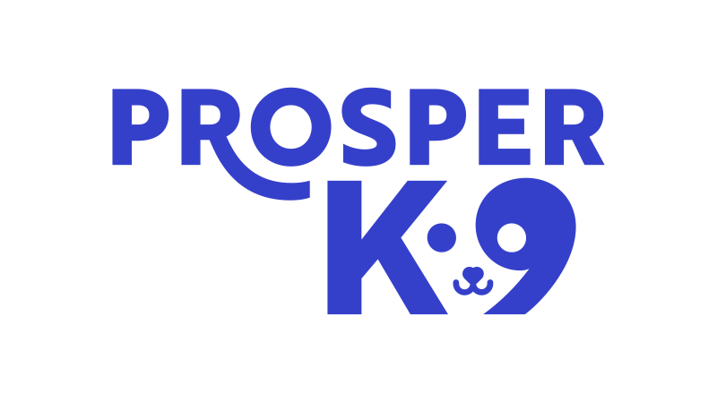

Whole-genome dog DNA test
Dog DNA collection kit
Three steps to your dog’s DNA report
Everything you need is in this box: a swab in a sealed pouch, a liquid-filled collection tube with your kit number on its label, and a prepaid return envelope.
1
Swab your dog’s cheeks
- Wait at least two hours after your dog has eaten, then open the swab pouch.
- Swab between the gums and cheek, right side, then left side, about 10 seconds each.
- Pierce the cover of the liquid-filled tube and lower the swab tip inside.
- Snap the swab stick at the notch (about halfway) so it fits in the tube.
- Close the tube and mix by turning it up and down a few times.
Scan to watch the how-to video
2
Register your kit online
- Create a free account at my.prosperk9.com (or sign in if you already have one).
- Click Register Kit and give your dog a name.
- Type the 8-digit kit number printed on the tube label, exactly as shown, dashes included:
1234-56-78example of a tube label
- The number is on the tube, not on the box. There is nothing to scan.
Scan to open my.prosperk9.com
3
Mail it back, postage is on us
- Place the closed tube in the prepaid return envelope provided.
- Drop it off at any mail pickup point. That’s it!
We’ll email you when your dog’s report is ready: breed ancestry, genetic health, traits, oral health, relatives, and the AI Health Advisor to answer your questions. The report is re-analysed free for the life of your dog.